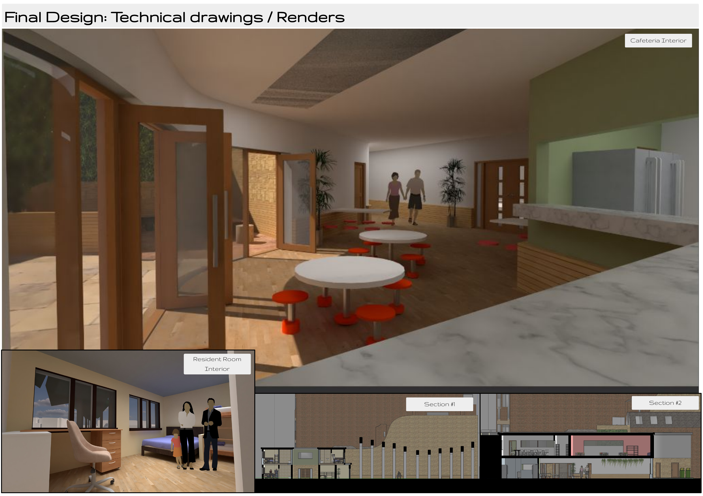

Community Design · May 2025
Community Design · May 2025
Overview
A community centre and temporary residence for families fleeing conflict, sited within Portsmouth city centre. The building is conceived as an oasis — a place of sanctuary at the end of a long and hard journey, designed around the emotional and physical needs of people who have lost homes, possessions, and in many cases family members.
The plan organises around a central courtyard, with the building wrapping its surrounding context and flowing downward to a sheltered ground level. A long corridor housing an art installation runs the length of the public-facing elevation: its repeating undulating arches reference the journey users have made to arrive here, drawing from the staggered arch corridor at Exeter College Cohen Quad by Alison Brooks Architects.
Gathering spaces — the classroom, cafeteria, and dining room — face south to take full advantage of available sunlight. The residential block occupies the quietest point in the site, with private rooms connecting back to the shared facilities through reception and storage. The building gives privacy where it's needed and community where it can be found.
Materials are warm and durable: stone, brick, timber. Colours were drawn from earth tones — ochres, terracottas, deep greens — to create an interior that feels rooted rather than temporary.
Narrative & Concept
The design began with a mapping exercise — visually representing the emotional and physical journey of a refugee: forced departure, loss of home and identity, the long displacement, arrival. Inspired by Francis Alÿs' Sometimes Making Something Leads to Nothing, this map was translated into a physical model tracing the erosion of identity along the way, while showing how roots can grow again.
The building is not just shelter. It is an argument that arriving somewhere new does not mean starting from nothing.
Spatial transitions — from concrete to wood, from public to private — are used to reflect the journey narrative. Entry through the arch corridor is public and processional. The courtyard beyond is quieter, contained, somewhere to stop. The residential rooms beyond that are private.
The first design iteration was too large and too abstract. Subsequent iterations focused the building on the lived experience of its users, reducing scale, improving solar orientation, and anchoring the residential block at the quietest part of the site away from road noise.
Direct action and compassionate support for people fleeing conflict and persecution.
A community space where families and children meet, make friends, and integrate into the city.
Legal advice and support ensuring children's rights are protected while they are in England.
Project Boards


